正解！
ここにモーダルの内容が入ります。
指文字表を表示する
| わ |
ら 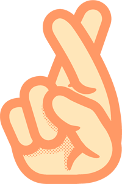 |
や 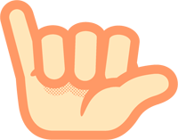 |
ま 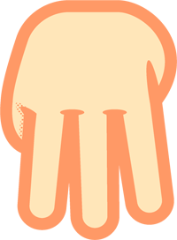 |
は |
な 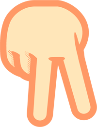 |
た |
さ |
か 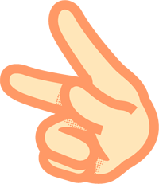 |
あ |
| 長音「ー」 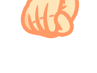 |
り 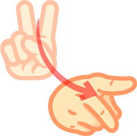 |
み |
ひ 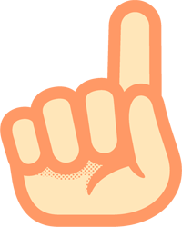 |
に |
ち 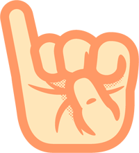 |
し |
き |
い 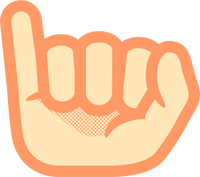 |
|
| を 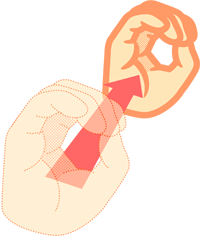 |
る 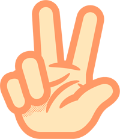 |
ゆ |
む |
ふ |
ぬ 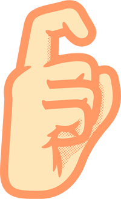 |
つ 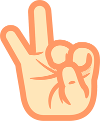 |
す 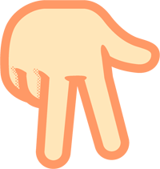 |
く |
う |
| れ 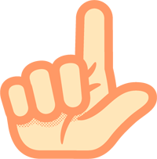 |
め 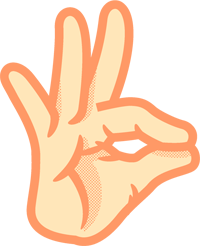 |
へ |
ね 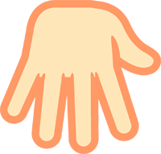 |
て |
せ 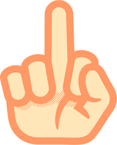 |
け |
え 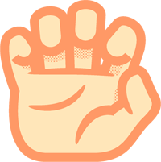 |
||
| ん |
ろ 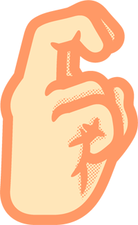 |
よ |
も 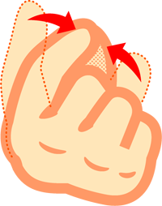 |
ほ |
の 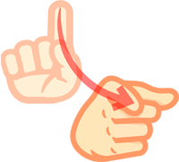 |
と |
そ |
こ 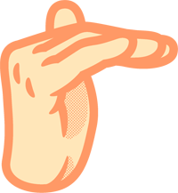 |
お 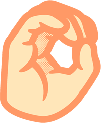 |
横移動すると濁音 例「が」
|
上移動すると半濁音 例「ぱ」 | 遠ざかると拗音，促音 例「ゃ」 |
|||||||
なうろーでぃんぐ
＜＜レベル選択画面に戻る経過時間:
00:00:00
上のボタンで指文字を表示させて
クロスワードを完成させよう！
下にあるカギが重要だぞ！
【操作方法】
上部のボタンを押して指文字を選択
下部のマス目を押してその指文字をを入力
マス目に入れた指文字はクリックで削除